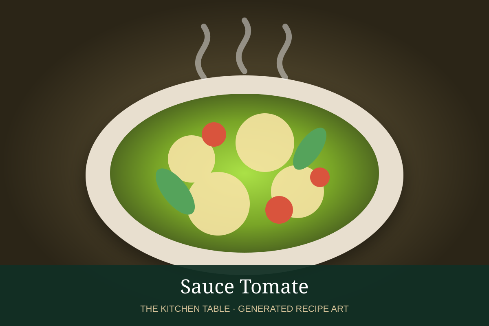

← Sauce Tomate & related sauces
SAUCE · TOMATO SAUCE FAMILY
Bolognese
A slow-cooked meat ragù with soffritto, beef and pork, wine, milk, and tomato.
2 hr 30 minMakes about 6 cups

Photo: Nano Banana
Ingredients
- 2 tbsp olive oil
- 1 onion, finely diced
- 1 carrot, finely diced
- 1 celery stalk, finely diced
- 8 oz ground beef
- 8 oz ground pork
- 1/2 cup dry white or red wine
- 1 cup whole milk
- 1 can (28 oz) crushed tomatoes
- 2 tbsp tomato paste
- Salt and black pepper
- Parmigiano-Reggiano, for serving
Preparation
- Cook onion, carrot, and celery gently in olive oil until very soft.
- Add beef and pork and cook until no longer pink and lightly browned.
- Add wine and reduce almost completely.
- Stir in milk and simmer until mostly absorbed.
- Add tomatoes and tomato paste and cook at a bare simmer for about 2 hours.
- Season and serve with pasta.
Family: See the Sauce Tomate page →